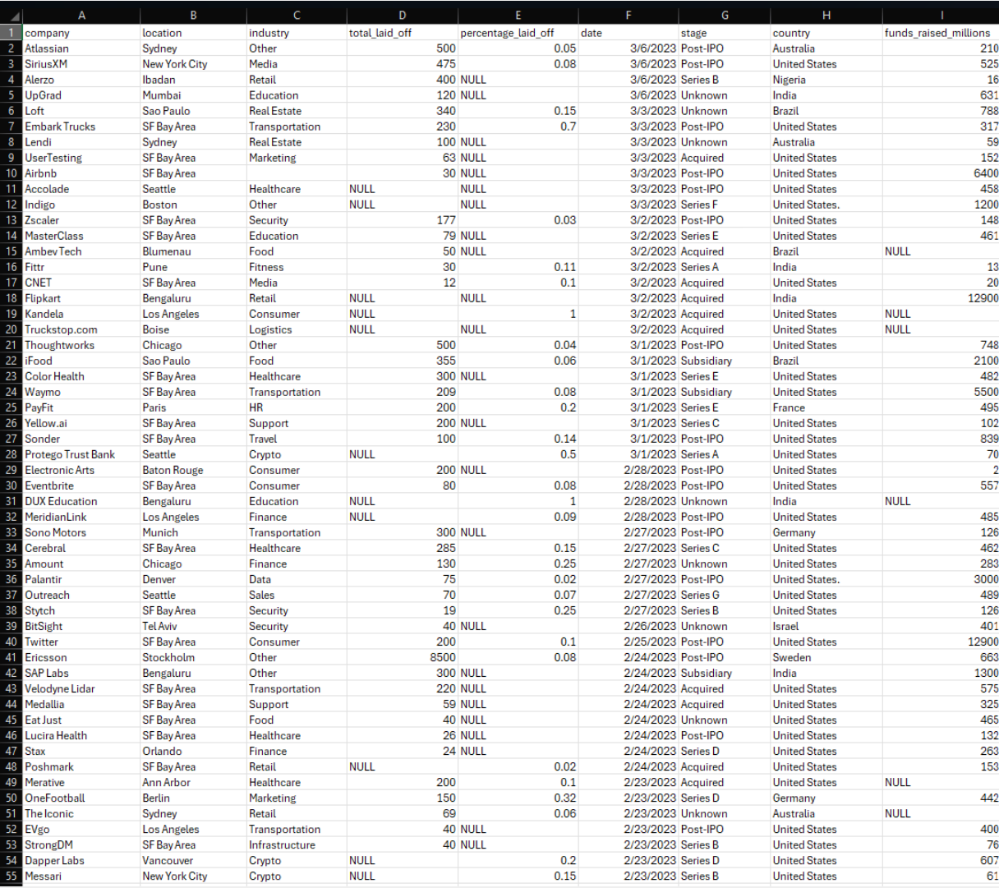
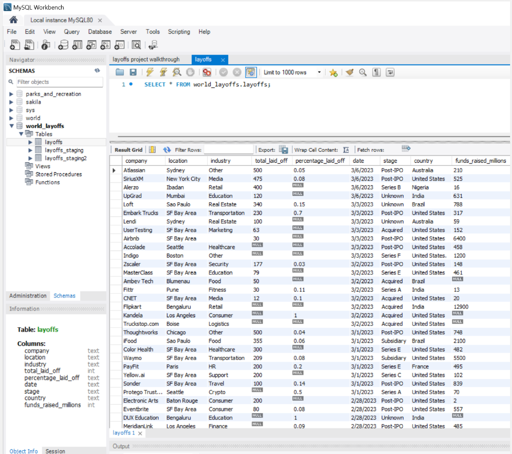

1. Raw dataset overview
World layoffs CSV · company, location, industry, layoff counts, dates, funding
The original dataset captured company level layoff events with columns for location, industry,
total employees laid off, percent laid off, layoff date, funding stage, country, and funds raised.
It arrived as a CSV file with no constraints and visible quality issues.
- Duplicate rows for the same company, location, date, and layoff counts.
- Inconsistent capitalization and whitespace across text fields.
- Country names such as United States. with trailing punctuation.
- Dates stored as text strings instead of native date types.

Preview of the world layoffs CSV as originally delivered. Columns include company, location,
industry, layoff counts, date, stage, country, and funds raised.

The same data imported into a MySQL database (world_layoffs) and exposed as the
layoffs table. This raw table is kept unchanged as the reference source.
2. Staging and cleaning setup
Raw table preserved · staging tables used for all transformations
To protect the original layoff records, I created staging tables that mirror the raw structure.
All cleaning steps run inside these staging layers, which makes the pipeline repeatable and easy
to debug without risking the source data.
-- Duplicate raw table into a staging table
CREATE TABLE layoffs_staging LIKE layoffs;
SELECT * FROM layoffs_staging;
INSERT INTO layoffs_staging
SELECT * FROM layoffs;
-- Create a second staging table for stepwise cleaning
CREATE TABLE layoffs_staging2 (
company TEXT,
location TEXT,
industry TEXT,
total_laid_off INT DEFAULT NULL,
percentage_laid_off TEXT,
`date` TEXT,
stage TEXT,
country TEXT,
funds_raised_millions INT DEFAULT NULL
) ENGINE = InnoDB
DEFAULT CHARSET = utf8mb4
COLLATE = utf8mb4_0900_ai_ci;
INSERT INTO layoffs_staging2
SELECT *
FROM layoffs_staging;

View of the layoffs_staging2 table in MySQL Workbench after initial copy from
the raw table. This is the workspace for all subsequent cleaning logic.
3. Removing duplicate records
Window function based deduplication with ROW_NUMBER()
Exact duplicates occur when the same company, location, industry, layoff counts, date, stage,
country, and funding appear more than once. I used a common table expression with
ROW_NUMBER() to flag these cases and then removed all but a single instance.
-- Step 1: Removing duplicates
-- Identify duplicates using ROW_NUMBER() and partition by key fields
WITH duplicate_cte AS (
SELECT *,
ROW_NUMBER() OVER (
PARTITION BY company,
location,
industry,
total_laid_off,
percentage_laid_off,
`date`,
stage,
country,
funds_raised_millions
) AS row_num
FROM layoffs_staging
)
SELECT *
FROM duplicate_cte
WHERE row_num > 1;
-- Insert data into layoffs_staging2 including the row number
INSERT INTO layoffs_staging2
SELECT *,
ROW_NUMBER() OVER (
PARTITION BY company,
location,
industry,
total_laid_off,
percentage_laid_off,
`date`,
stage,
country,
funds_raised_millions
) AS row_num
FROM layoffs_staging;
-- Remove duplicate rows where row_num > 1
DELETE
FROM layoffs_staging2
WHERE row_num > 1;
-- Verify the cleaned dataset
SELECT *
FROM layoffs_staging2;
After this step, every layoff event is represented once for each unique company, location,
industry, date, and layoff combination.
4. Standardizing company, industry, and country fields
Trimmed whitespace, consolidated industry labels, normalized country text
Consistent text values are essential for accurate group by analysis. I standardized company names,
consolidated variant industry labels for cryptocurrency firms, and removed trailing punctuation from
country names.
-- Standardize company names by trimming leading and trailing whitespace
UPDATE layoffs_staging2
SET company = TRIM(company);
-- Consolidate variations of industries into a single category (Crypto)
UPDATE layoffs_staging2
SET industry = 'Crypto'
WHERE industry LIKE 'Crypto%';
-- Remove inconsistent formatting in the country field
-- Example: "United States." becomes "United States"
UPDATE layoffs_staging2
SET country = TRIM(TRAILING '.' FROM country)
WHERE country LIKE 'United States%';
These standardization steps allow analysts to roll up layoffs by industry and country without
losing records to minor spelling or punctuation differences.
5. Handling missing values
Filled industry gaps and removed records with no layoff information
Some rows were missing industry values even though similar records for the same company and
location had valid entries. Others had no layoff counts at all. I addressed these cases in two
stages.
-- Populate missing industry fields by self joining on company and location
UPDATE layoffs_staging2 t1
JOIN layoffs_staging2 t2
ON t1.company = t2.company
AND t1.location = t2.location
SET t1.industry = t2.industry
WHERE t1.industry IS NULL
AND t2.industry IS NOT NULL;
-- Remove rows where both total_laid_off and percentage_laid_off are NULL
DELETE
FROM layoffs_staging2
WHERE total_laid_off IS NULL
AND percentage_laid_off IS NULL;
This step retains informative records while discarding entries that cannot contribute to
quantitative analysis.
6. Date conversion and final cleanup
Converted date strings to DATE type and removed helper columns
To support time based analysis, the date column was converted from text to a native
DATE type using STR_TO_DATE(), and the temporary row_num
helper column from deduplication was dropped.
-- Convert the date column from TEXT to DATE format
UPDATE layoffs_staging2
SET `date` = STR_TO_DATE(`date`, '%m/%d/%Y');
-- Modify the date column type to DATE
ALTER TABLE layoffs_staging2
MODIFY COLUMN `date` DATE;
-- Drop the unnecessary row_num column from the table
ALTER TABLE layoffs_staging2
DROP COLUMN row_num;
-- Verify the final cleaned table
SELECT *
FROM layoffs_staging2;
At this point, layoffs_staging2 serves as the cleaned, analysis ready table that can be
queried directly or exported into BI tools such as Tableau or Power BI.